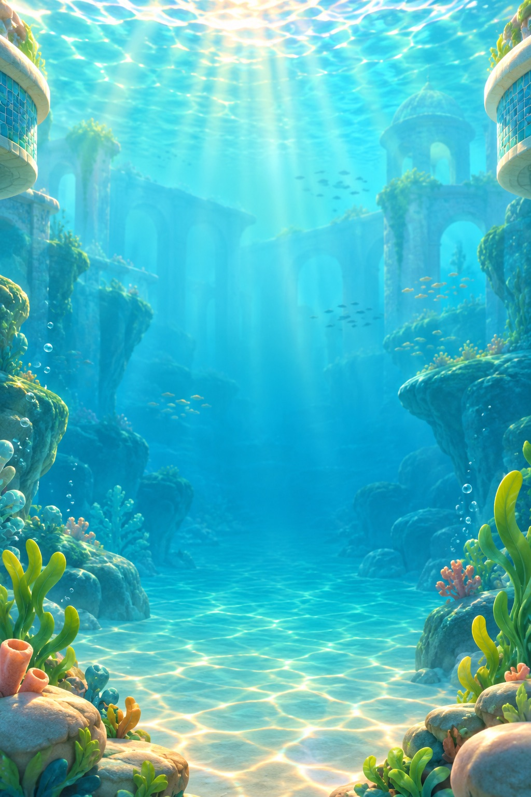
01Солнечный бассейн
Поплавки, пружинки и первые сокровища. Мягкий старт большого приключения.
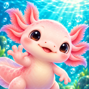
LumiЗнакомься, Люми — любопытный аксолотль с большими планами. Прыгай навстречу свету, собирай сокровища и найди свой уголок в лагуне.
В гости к ЛюмиИгра в разработке · английский и русский
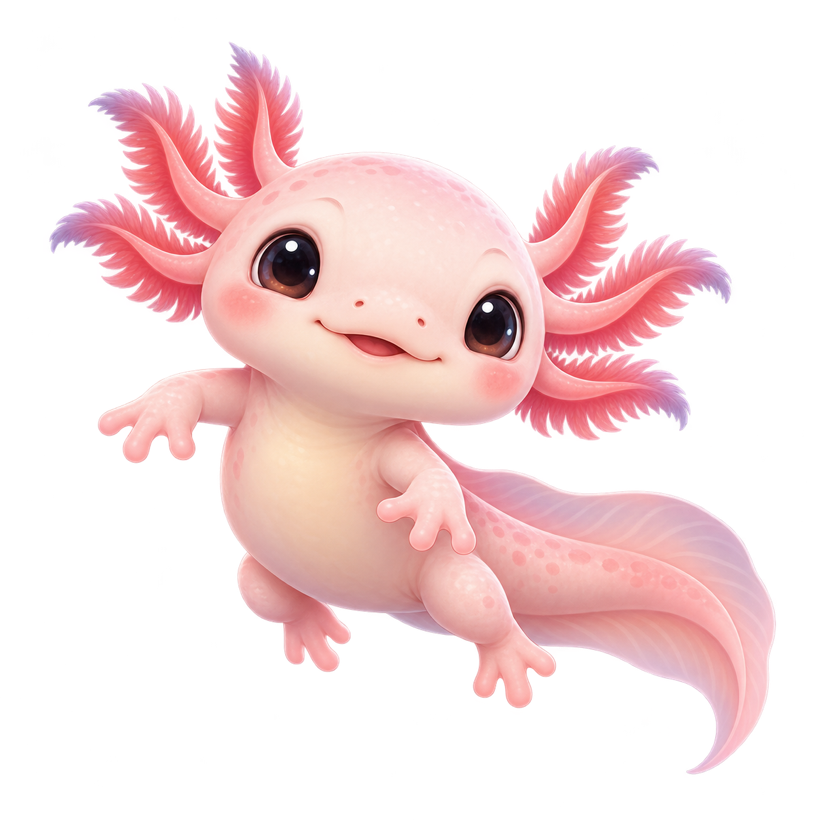
Знакомый бассейн становится коралловым садом, а дальше ждёт таинственный мангровый лес.

01Поплавки, пружинки и первые сокровища. Мягкий старт большого приключения.
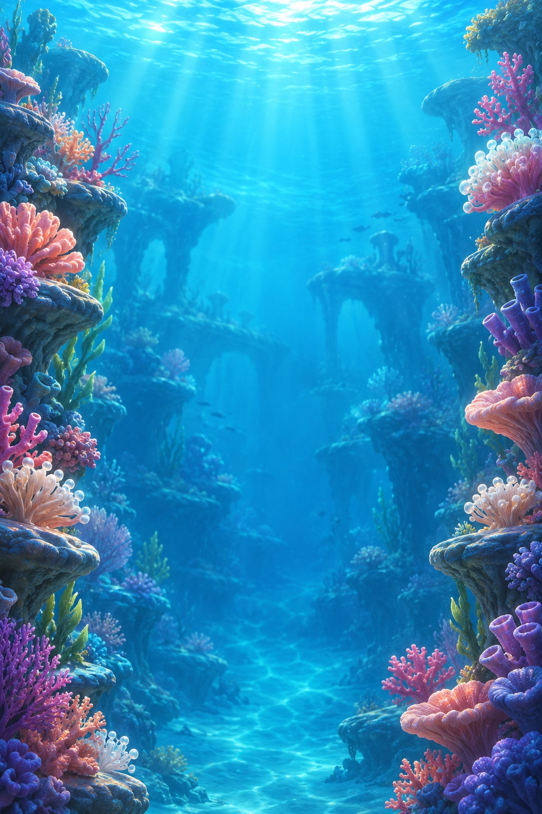
02Светящиеся анемоны подбрасывают выше. В открытых ракушках кроется опасность.
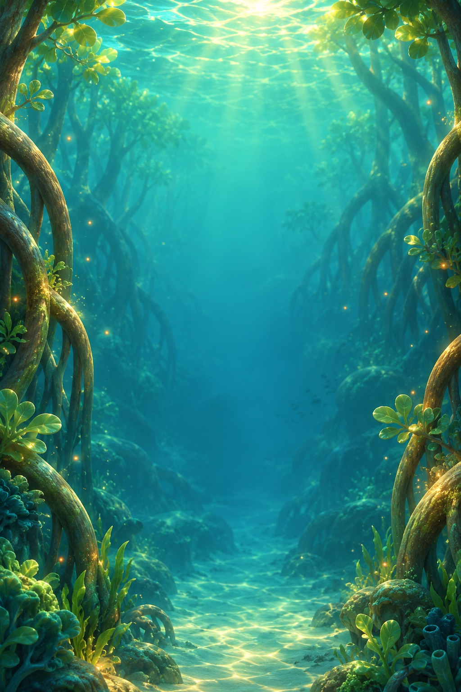
03Прыгай с кувшинки на кувшинку, пока они не ушли под воду. Берегись медуз!
Следуй за сиянием в глубину, поймай тропическое течение или прыгай под хрустальным льдом. У каждого мира — свой ритм.
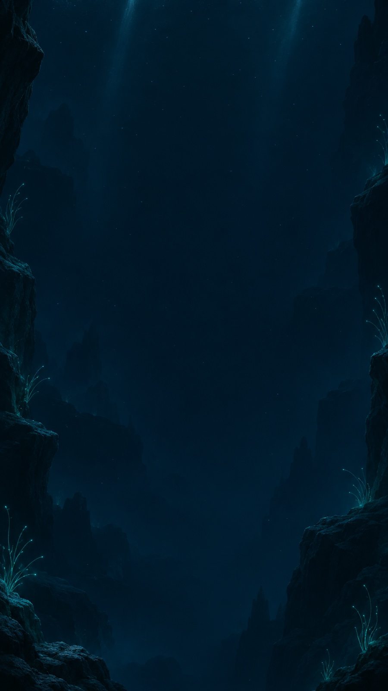
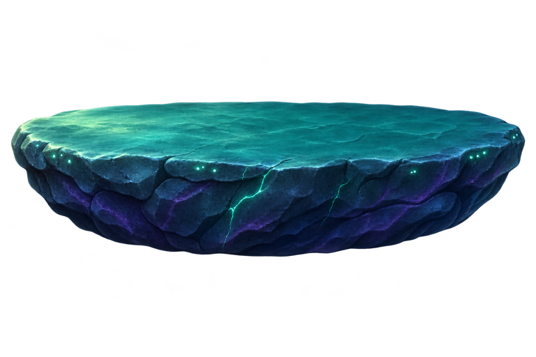
Светящиеся глубоководные хищники и водоросли-иголки среди тёмных скал. Термальные источники подбрасывают Люми, а сияющий планктон освещает путь.
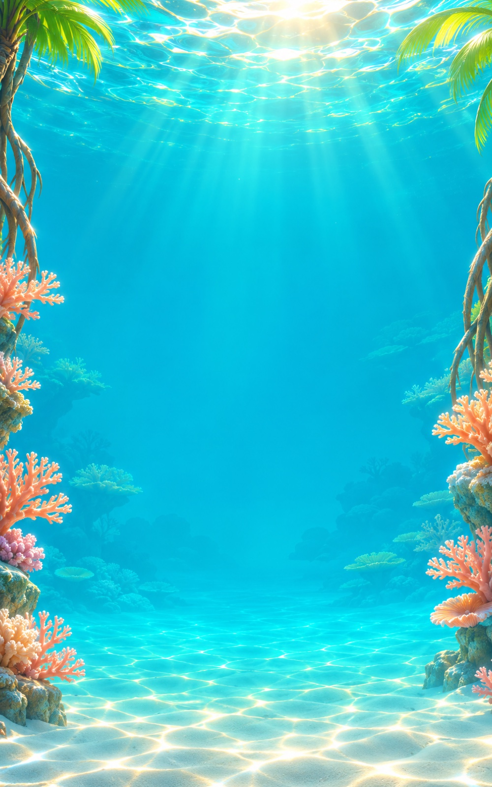
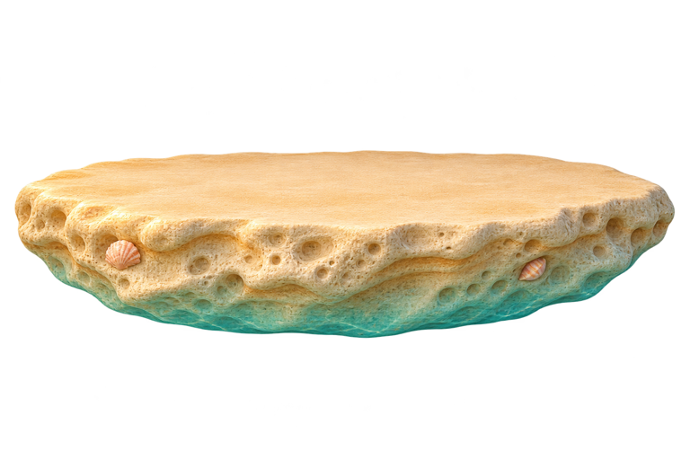
Бирюзовая вода, приливы и бродячие крабы. Лови течение, прыгай по коралловым островкам и взлетай на фонтанах к монеткам.
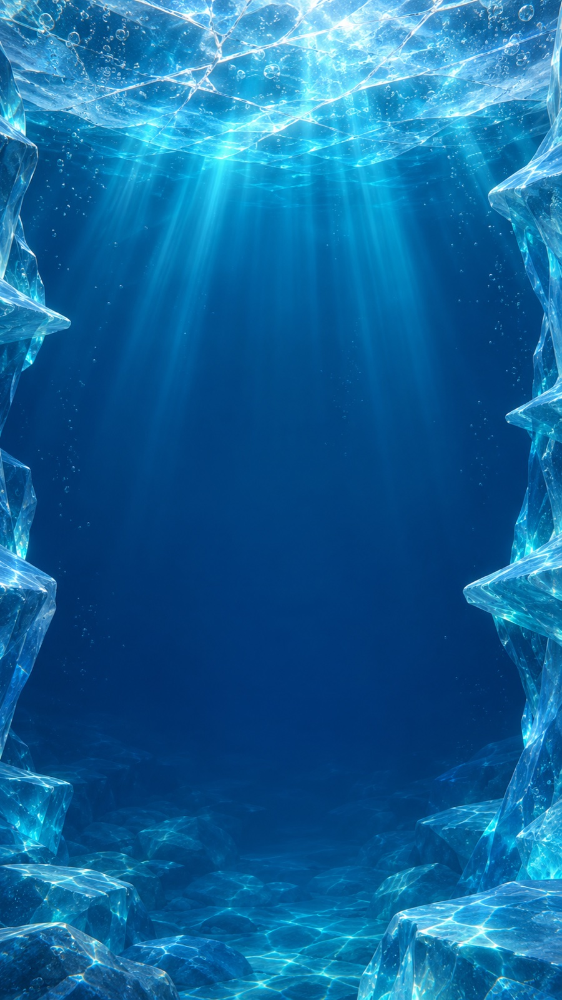
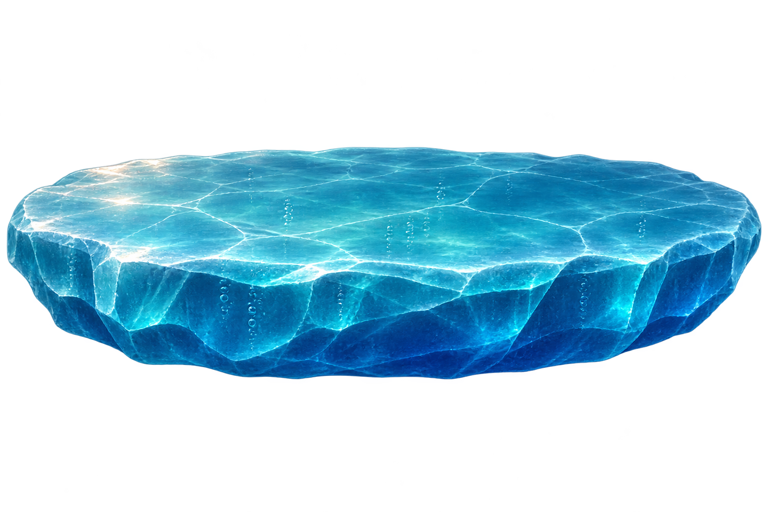
Прозрачный лёд и дрейфующие льдины. Уворачивайся от сосулек и ледяных колонн, а от опасностей укройся в тёплом пузыре.
Каждый мир открывается навсегда за 180 жемчужин. Для каждого доступна одна бесплатная проба до 60 секунд.
Люми прыгает сам. Ты выбираешь, куда приземлиться: веди пальцем или наклоняй iPhone.
Три жизни · бухточки для возвращенияДвойной тап даёт дополнительный прыжок в воздухе. Чем выше забираешься, тем больше препятствий.
Три секунды быстрого полёта — прямо к новым высотам.
Редкая радуга над водой превращает Люми в радужный магнит: монетки закручиваются вихрем прямо к нему.
Выбирай любимый цвет, примеряй образы и оставляй за собой пузырьки, звёзды или лепестки. Собирай части сокровища дня и оживляй дом находками.
Монеты развивают силы. Жемчужины открывают образы, следы, улучшения и дополнительные миры. Наборы жемчужин необязательны; подписки нет.
Lumi пока в разработке для iPhone. Публичная версия ещё не вышла. Нужна помощь с тестовой сборкой или хочется поделиться идеей? Напиши нам.